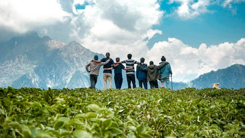

ACTIVACIÓN: ¿QUIÉN SE OCUPA DE LO QUE ES DE TODOS/AS?
A nuestro alrededor encontramos situaciones que afectan al bienestar de muchas personas. Sin embargo, no siempre nos preguntamos por qué ocurren, a quién afectan o quién debería intervenir para solucionarlas. En esta sesión vamos a observar nuestro entorno y a plantearnos una pregunta que nos acompañará durante toda esta unidad:
¿Qué pasaría si el Estado dejara de intervenir en nuestra vida cotidiana?
OBSERVAMOS · La economía también se canta
|
Comenzaremos viendo tres fragmentos de la chirigota "Los Camper del Sur". Presta atención a las situaciones en las que las decisiones de unas personas pueden tener consecuencias sobre otras. Fragmento 1: 00:30 – 01:03: Observa las situaciones que se plantean y las personas que pueden verse afectadas. Fragmento 2: 01:03 – 01:35: Fíjate en los cambios que aparecen en el entorno y en los diferentes intereses que pueden existir. Fragmento 3: 01:35 – 01:46: Presta atención a la crítica que plantea la chirigota. |
Después, piensa:
- ¿Qué situaciones o problemas aparecen?
- ¿A quién pueden afectar?
- ¿Quién puede beneficiarse de estas situaciones y quién puede verse perjudicado?
- ¿Crees que las decisiones individuales de las personas y empresas pueden influir en el bienestar del conjunto de la sociedad?
Comparte tus ideas con tu compañero/a. Puesta en común.
LEEMOS · ¿Qué ocurre con lo que es de todos?
 |
¿De quién son los recursos naturales? La extracción de estos recursos puede generar beneficios económicos, pero también impactos ambientales y sociales. Aparece así un conflicto entre diferentes intereses: ¿quién se beneficia de la explotación de unos recursos que forman parte del patrimonio natural y qué costes asume la sociedad? Esta cuestión nos lleva al concepto de bienes comunes: recursos cuyo uso debe compatibilizar el aprovechamiento económico con su conservación y con el bienestar de las generaciones presentes y futuras. Cuando cada agente busca únicamente su propio beneficio, un recurso compartido puede sobreexplotarse, dando lugar a la conocida tragedia de los bienes comunes. Por ello, el debate no consiste únicamente en elegir entre mercado o Estado. También debemos preguntarnos quién debe gestionar estos recursos, qué reglas deben establecerse y cómo garantizar que los beneficios y los costes se distribuyan de forma justa y sostenible. La transición energética no es solo una cuestión tecnológica: también es una cuestión económica y social. |
Después de leerlo, responde individualmente:
- ¿Qué problema o problemas plantea el artículo?
- ¿Qué intereses pueden entrar en conflicto?
- ¿Puede una decisión que beneficia a una persona o empresa generar consecuencias negativas para otras personas?
- Cuando un problema afecta al conjunto de la sociedad, ¿quién debería encargarse de solucionarlo?
- ¿Crees que dejar actuar libremente a las personas y empresas garantiza siempre el bienestar de toda la sociedad? ¿Por qué?
Compara tus respuestas con las de un compañero o compañera. ¿Coincidís? ¿Habéis cambiado o matizado alguna de vuestras ideas después de escuchar al otro?
MIRAMOS NUESTRO ENTORNO · Padlet
Ahora vamos a trasladar estas preguntas a nuestro propio entorno. En parejas, buscad una situación de nuestro municipio y, si puedes, de tu barrio que consideres que afecta al bienestar de la sociedad. No buscamos necesariamente un problema relacionado con la vivienda. Queremos descubrir problemas diferentes y cercanos que nos permitan observar cómo las decisiones económicas pueden afectar a otras personas. Puede tratarse, por ejemplo, de contaminación, residuos, contaminación acústica, falta de zonas verdes, etc. u otros problemas que observes en tu entorno.
Publicad una noticia de la situación que hayas identificado con la siguiente información:
- Título: Una frase breve que identifique el problema.
- ¿Qué ocurre?: Explica brevemente cuál es el problema.
- ¿A quién afecta?: Indica quiénes pueden verse perjudicados o beneficiados.
- ¿Por qué crees que ocurre?: Formula una primera hipótesis sobre sus posibles causas.
- ¿Quién debería intervenir?: Propón quién debería actuar para mejorar la situación.
No importa que tu hipótesis todavía no sea correcta. Durante esta unidad aprenderemos nuevas herramientas para analizar estas situaciones. Después, pondremos en común las información de nuestro Padlet. Observaremos si aparecen situaciones diferentes y nos fijaremos especialmente en:
|
No intentaremos resolver todavía estos problemas. Nuestro objetivo es formular preguntas que podamos investigar durante las próximas sesiones.
UNA PREGUNTA PARA INVESTIGAR
Volvemos a la pregunta con la que comenzamos: ¿Cuando cada persona y cada empresa busca lo que considera mejor para sí misma, el resultado es necesariamente bueno para toda la sociedad?. A partir de los problemas que hemos observado, dejamos abierta una nueva cuestión:
Si el mercado coordina las decisiones económicas, ¿por qué existen problemas que el mercado no consigue resolver por sí solo?
Esta será una de las preguntas que intentaremos responder a lo largo de esta unidad. Así, nuestro Padlet no termina con esta sesión.
Al finalizar la unidad volveremos a analizar el contenidos seleccionado y comprobaremos si somos capaces de analizarlo utilizando los conocimientos adquiridos.
Entonces podremos preguntarnos:
|
Será nuestro camino hasta el producto final de esta unidad: "Mira tu calle, ¿qué ves?"